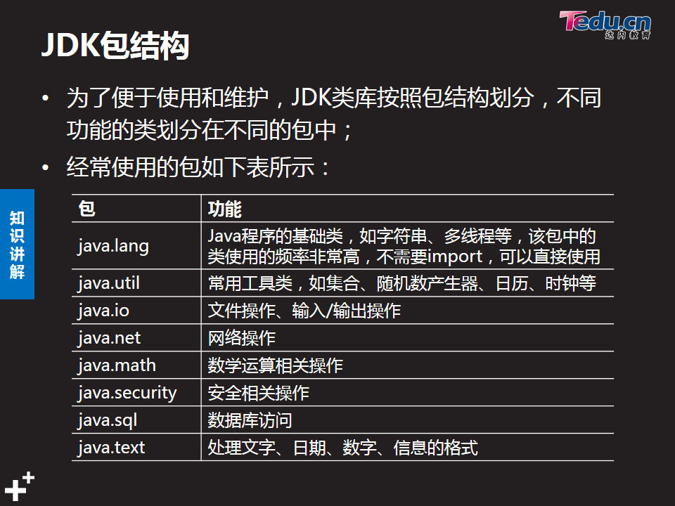

01_java_api_String
Mar 15, 2016
目录
- api
- jdk包结构
- 文档注释
- 类文档注释
- 方法文档注释
- String
- String常量池
- String常用方法
- StringBuilder和StringBuffer
API
应用程序接口
jdk包结构

文档注释
- /** 开始… */ 结束
- javadoc工具可将注释转换为html文档说明
- 文档注释 和 普通注释//… 或/…/
**
类功能说明文档注释
1 | /** |
方法功能说明文档注释
1 | /** |
String
- 字符串String 是不可变对象.
- java.lang.String 使用final修饰,不能被继承
- 字符串底层封装了字符数组以及对字符数组的操作算法
- 字符串一旦创建,字符串对象不可改变,字符串引用可以重新赋值
- 字符串一个字符对应16位的定长Unicode编码(2字节)
String 常量池
- 为了提高性能,在常量池中,创建静态字符串(字面量/常量/常量连接的结果).
- 对于重复使用的字符串直接量,jvm首先在常量池中查找.
String 常用方法
- indexOf() //检索某一个字符串在字符串中的位置
- lastIndexOf() //最后一次出现的位置
- substring() //获取子字符串
- trim() //截取前后空字符
- charAt() //返回指定位置的字符
- startsWith()/endsWith() //是否以什么开始或结尾
- split(String regex) //匹配正则
- matches(String regex); //匹配分隔符, 分割字符串
StringBuilder和StringBuffer 常用方法
作用一样,都是提供一个可变字符数组.前者线程不安全, 性能更高, 后者线程安全, 性能会慢些.
- append()
- toString()
- insert()
- delete()
- replace()
- reverse()